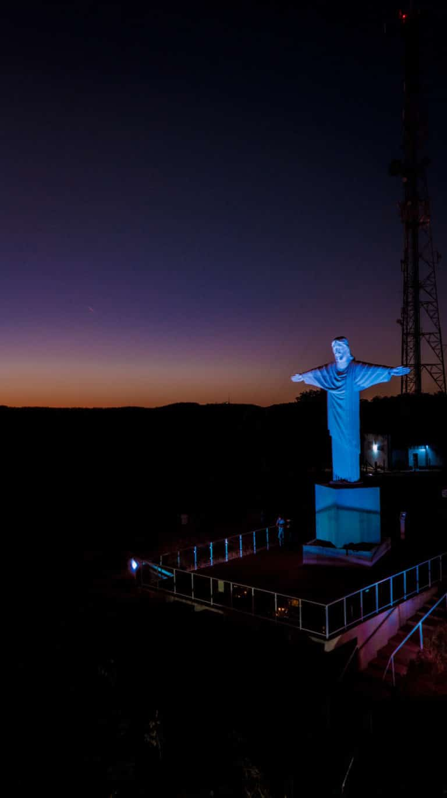

Conheça o lugar

O Cristo Redentor de Barra do Garças é um dos pontos turísticos mais conhecidos da cidade de Barra do Garças e um dos principais cartões-postais da região do Araguaia. Localizado no alto da Serra Azul, o monumento atrai turistas e moradores por sua vista panorâmica, pela importância religiosa e pelas belas paisagens naturais ao redor. O local se tornou um dos destinos mais visitados do município, especialmente por pessoas que procuram contato com a natureza, turismo religioso e contemplação das paisagens da região. O monumento do Cristo Redentor está situado em uma área elevada do Parque Estadual da Serra Azul, permitindo aos visitantes observar grande parte das cidades de Barra do Garças, Aragarças e Pontal do Araguaia. Do alto do mirante, também é possível visualizar o encontro dos rios Garças e Araguaia.
O Cristo Redentor de Barra do Garças é um dos principais cartões-postais da cidade e um dos pontos turísticos mais visitados da região do Araguaia, no estado de Mato Grosso. Localizado no alto do Parque Estadual da Serra Azul, o monumento chama atenção pela vista panorâmica privilegiada da cidade e pela importância religiosa, cultural e turística que possui para moradores e visitantes. Cercado pelas paisagens naturais do Cerrado brasileiro, o local se tornou um símbolo de Barra do Garças e um dos destinos mais conhecidos da região Centro-Oeste.
Outro destaque do local é a tranquilidade proporcionada pela natureza ao redor do monumento. Muitas pessoas visitam o Cristo Redentor para relaxar, apreciar o silêncio da serra e aproveitar o contato direto com a natureza. Durante os períodos de férias e feriados, o Cristo Redentor recebe turistas de várias partes do Brasil interessados em conhecer a famosa Escadaria da Fé e as paisagens da Serra Azul.
Além de toda a importância turística, cultural e religiosa, o Cristo Redentor possui localização de fácil acesso para visitantes que desejam conhecer um dos pontos mais famosos de Barra do Garças.
As condições de acesso, funcionamento, valores e regras podem mudar. Confirme as informações com responsáveis ou órgãos locais antes de realizar o passeio.